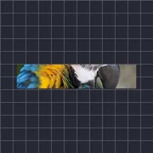

Згортання

Скручує один кінець шару навколо кола, а інший залишає плоским; анімуйте «Зсув», щоб згорнути чи розгорнути шар. Найкраще працює на широких тонких шарах.
Налаштування
| Налаштування | Тип | Діапазон | Типово |
|---|---|---|---|
| Зсув | Число | від -0.5 до 1.5 | 0.5 |
| Радіус | Число | від 0 до 50 | 1 |
| Згортати з | Вибір | Ліворуч, Праворуч | Праворуч |
| Напрямок | Вибір | Вгору, Вниз | Вгору |
| Розтягнення | Число | від 0.01 до 50 | 1 |